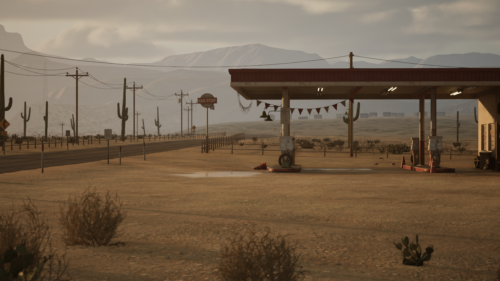
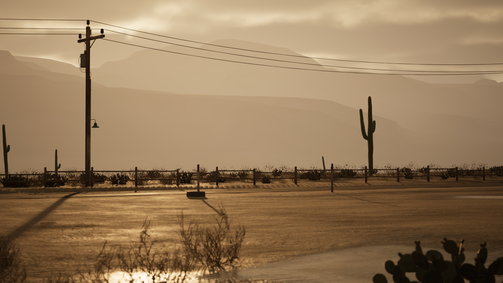
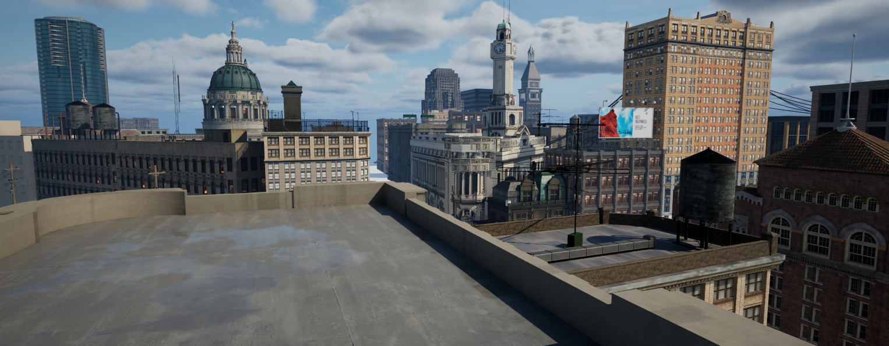
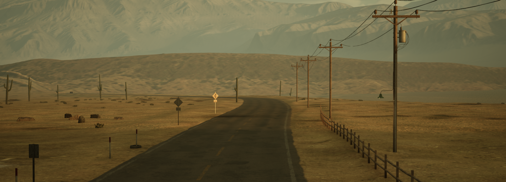
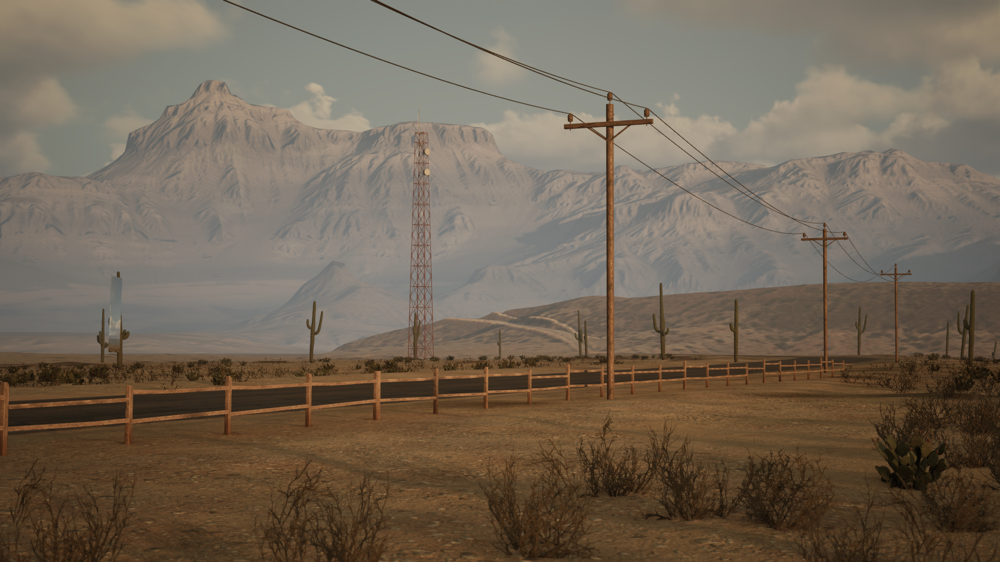
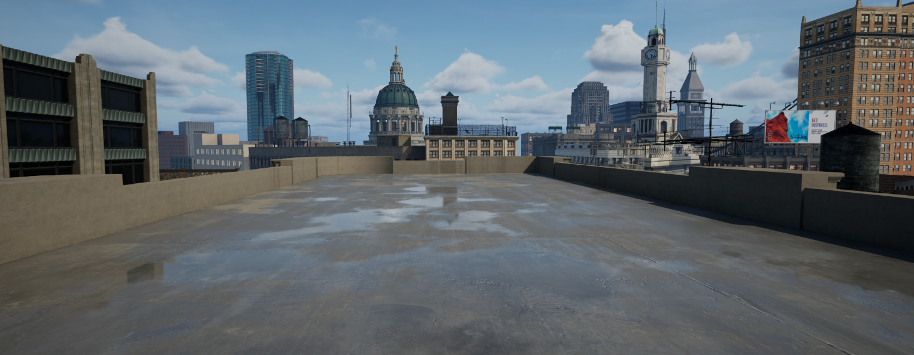

Divididos San Saltarín Video Clip
Cacodelphia
One of my notable projects includes the creation of captivating environments and props for the music video "DIVIDIDOS," where I meticulously designed every element to immerse viewers in a surreal and visually stunning experience. This project allowed me to demonstrate my ability to blend creativity with technical precision, resulting in a seamless integration of 3D artistry into the video's narrative.






© 2023 Any | Design by Juanito de la cruz | All rights reserved